Defensoría del Pueblo · Adjuntía para la Prevención de Conflictos Sociales y la Gobernabilidad
Veintidós años del Reporte de Conflictos Sociales: del listado de 2004 al reporte interactivo N.° 271, y lo que viene.
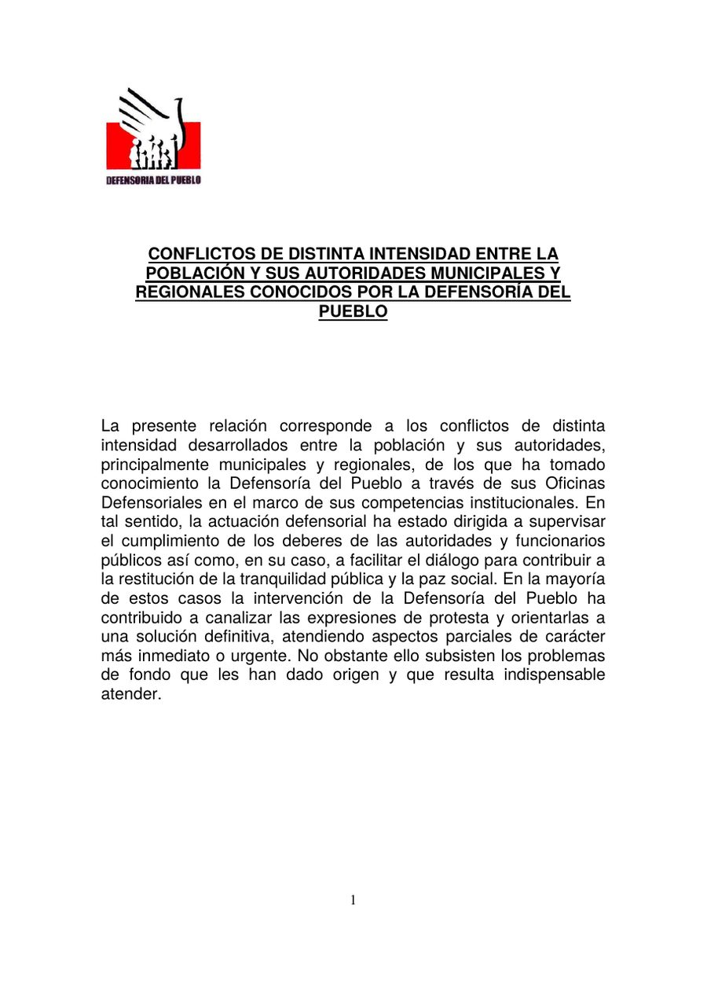
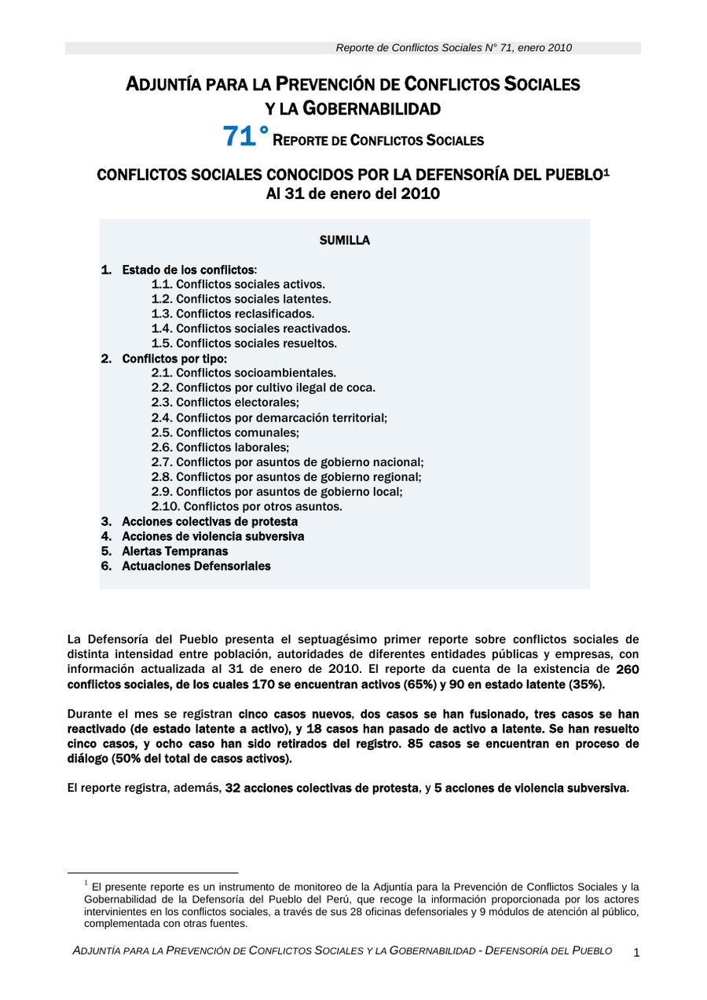
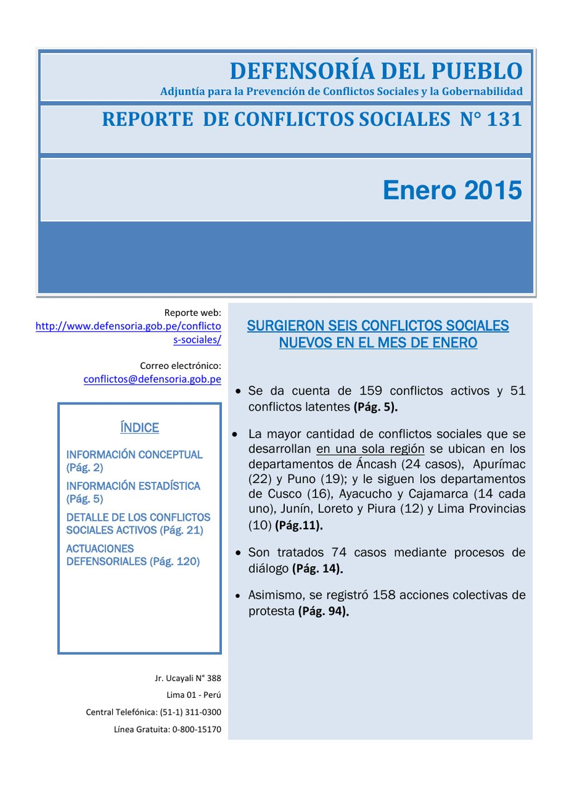
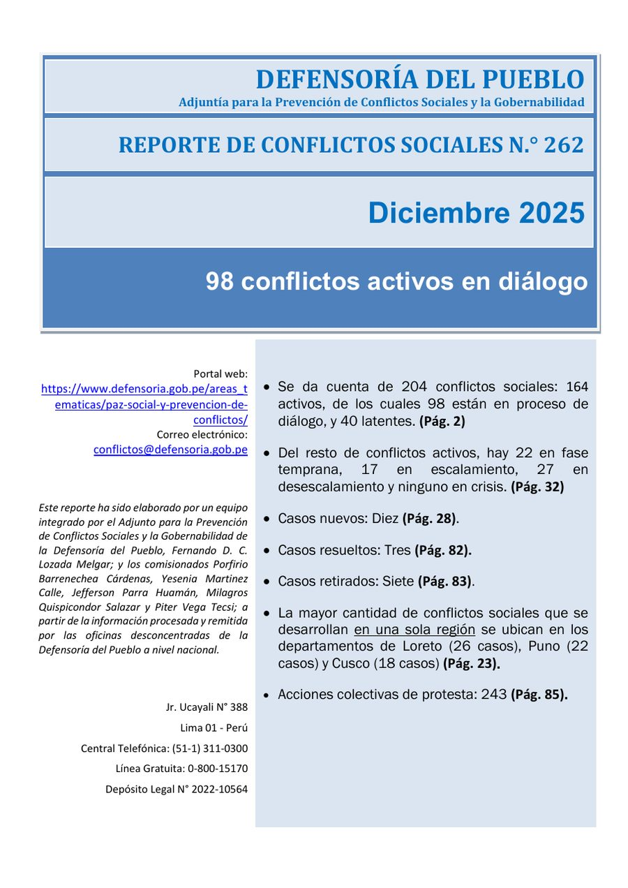
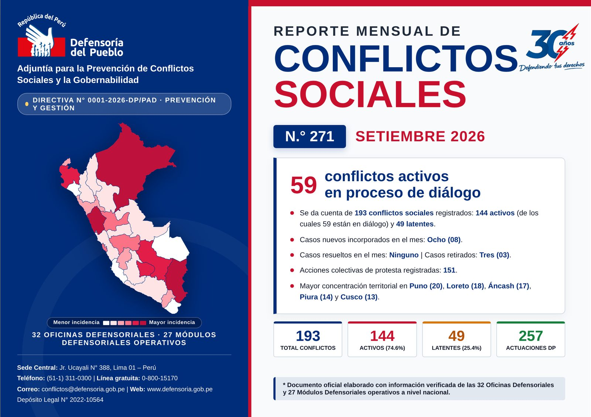
Un instrumento de Estado
ediciones mensuales publicadas
años de registro continuo
oficinas y módulos defensoriales que lo alimentan
Línea de tiempo
Seleccione un año
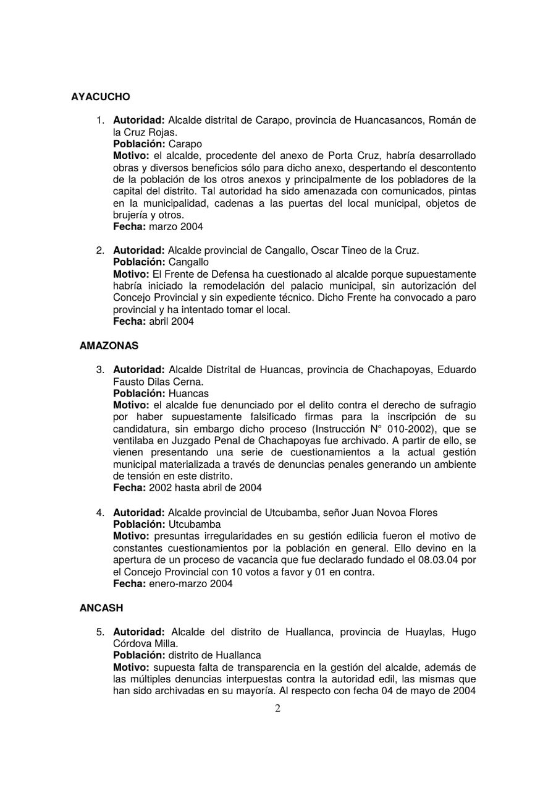
2004 · Reporte N.° 01
Conflictos entre la población y sus autoridades municipales y regionales, ordenados por departamento. Cada caso tenía cuatro datos: autoridad, población, motivo y fecha.
Antes y después
Arrastre el control
2026 · Reporte N.° 271
Se consulta en pantalla, se busca, se filtra por región, se explora en mapas y se descarga en PDF con un clic.
El reporte N.° 271
Al pasar el cursor, cada departamento muestra sus conflictos activos y latentes.
Diálogo, casos nuevos, resueltos, retirados, protestas y concentración territorial.
193 conflictos, 144 activos, 49 latentes y 257 actuaciones defensoriales.
Con esta edición se inicia la aplicación de la Directiva N.° 0001-2026-DP/PAD.
Antes y ahora
| Aspecto | PDF (hasta 2025) | Interactivo (2026) |
|---|---|---|
| Formato | PDF vertical de 120 páginas | Web, 69 páginas horizontales |
| Navegación | Índice con números de página | Menú con 27 destinos |
| Búsqueda | Recorrer el documento | Buscador y filtro por región |
| Mapas | Imágenes estáticas | 5 mapas interactivos |
| Casos | Tablas de texto corrido | 77 fichas que se amplían |
| Datos abiertos | No disponibles | Bases enlazadas con QR |
| Impresión | El mismo PDF | Exportación a PDF A4 |
Territorio
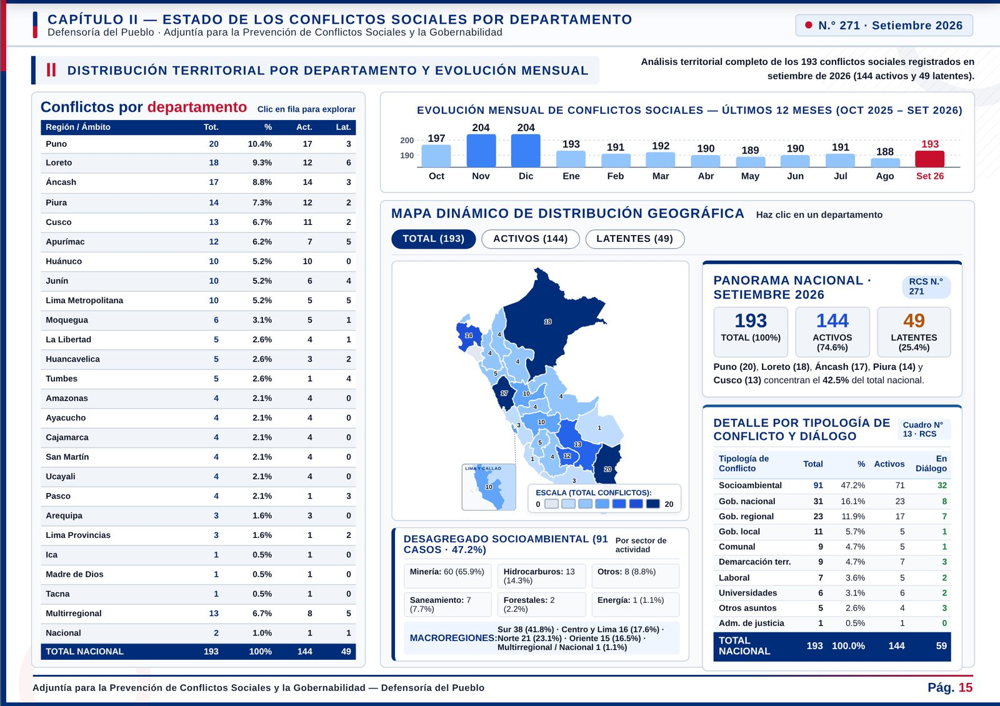
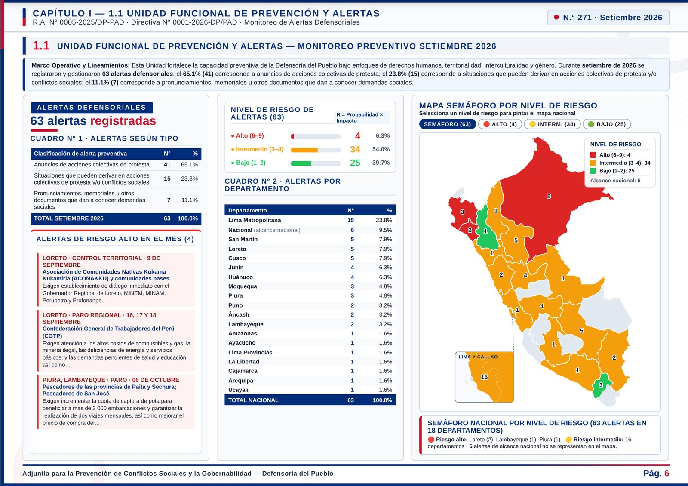
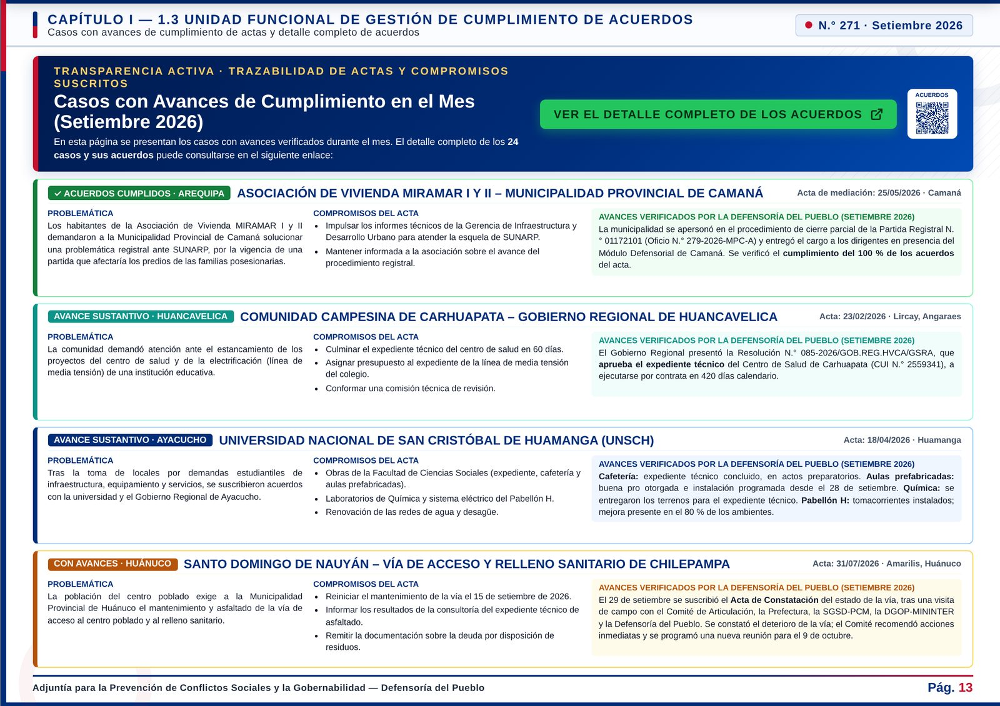
Total, activos o latentes por departamento. Al hacer clic en uno, la tabla y los indicadores se actualizan.
Casos
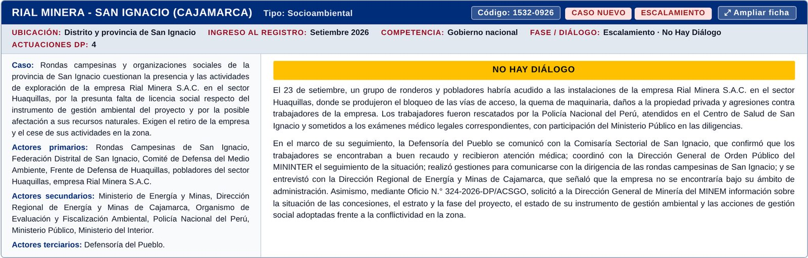
Buscador por nombre o código
Filtro por región con contador en vivo
Ampliar ficha para leerla completa
Guía lateral con la región de cada ficha
Prevenir, mediar, cumplir
clasificadas por riesgo y por departamento
en 8 departamentos, con su avance del mes
casos con actas en seguimiento en 15 regiones
espacios interinstitucionales en las 26 regiones
Las tres unidades funcionales de la Adjuntía y los espacios de coordinación tienen su propio capítulo, con mapas y cifras del mes.
Transparencia
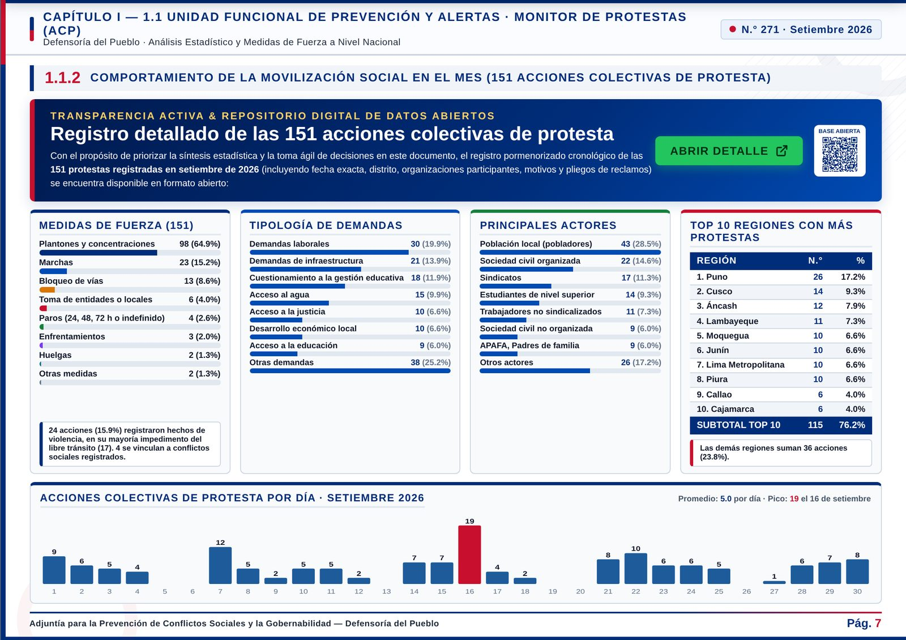
151 protestas en una base abierta enlazada con QR, además del repositorio de acuerdos.
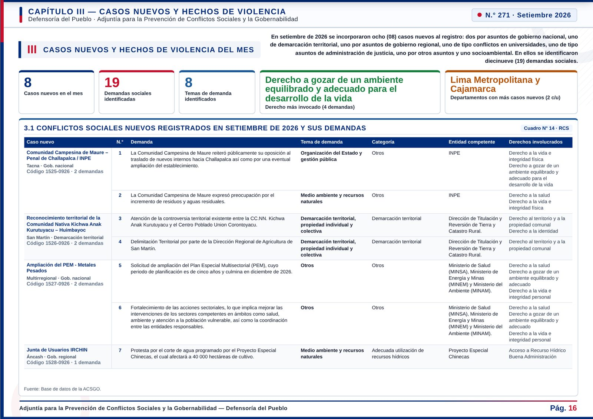
19 demandas de los casos nuevos, con tema, entidad competente y derechos involucrados.
Marco técnico
Directiva N.° 0001-2026-DP/PAD: estados, cambios de estado en el registro, fases, actores, competencia por nivel de gobierno y 11 tipos de conflicto.
El marco metodológico, el institucional y el glosario pasan a tres anexos: el cuerpo del reporte va directo a los datos.
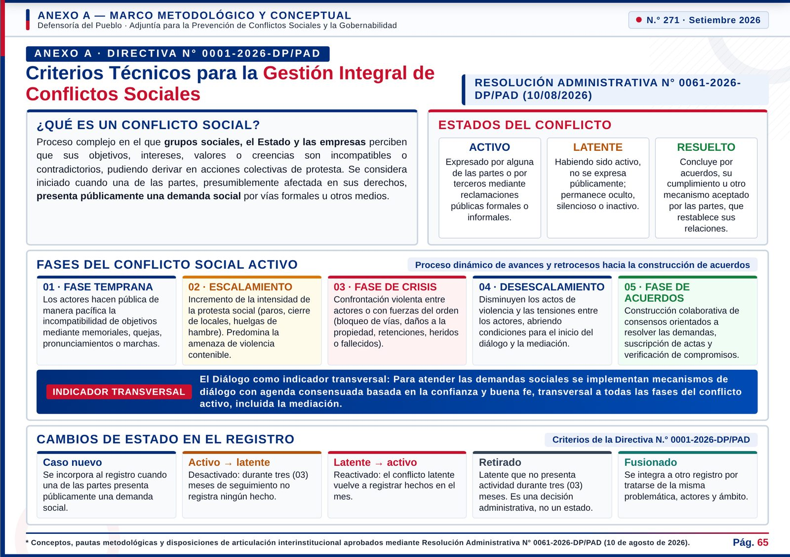
El salto en cifras
páginas, sin perder contenido
mapas interactivos del país
destinos en el menú de navegación
fichas con búsqueda y filtro
actuaciones defensoriales detalladas
para descargarlo en PDF A4
Hoja de ruta
El reporte seguirá creciendo: más evidencia del trabajo en campo, recomendaciones a las entidades y toda la comunicación del mes en un solo lugar.
Hoja de ruta
Fotos de los procesos de mediación y de los espacios de coordinación, con lugar, fecha y entidades.
Que la Defensoría está en el territorio: reuniones, visitas, mesas y actas, junto a la ficha del caso al que corresponden.
Autorización de uso de cada foto, pie con lugar y fecha, y sin rostros de menores ni datos personales.
Enlaces a todas las notas de prensa de la web de la Defensoría y a las publicaciones en redes sociales del mes, por caso o por región.
La voz pública de la institución sobre cada conflicto, conectada con los datos del reporte.
Un registro mensual de enlaces de la web y de las cuentas oficiales, con fecha, red y caso.
Un capítulo de recomendaciones a las entidades competentes, con el seguimiento de su atención mes a mes.
Qué propone la Defensoría para cada caso y quién debe actuar.
Un estado por recomendación: atendida, en proceso o sin respuesta.
Previa inscripción, un aviso por correo cuando se publica el reporte, con el resumen del mes y el enlace.
Las cifras clave, los casos nuevos y las alertas de riesgo alto, en un solo mensaje.
Entidades del Estado, autoridades regionales y locales, academia, prensa y ciudadanía inscrita.
Cómo se verá
Maquetas ilustrativas: contenido de ejemplo
| Entidad | Recomendación | Estado |
|---|---|---|
| [Entidad] | [Recomendación] | Atendida |
| [Entidad] | [Recomendación] | En proceso |
| [Entidad] | [Recomendación] | Sin respuesta |
Reciba el reporte cada mes en su correo.
Correo de ejemplo
Reporte N.° [número] publicado
[Conflictos del mes] · [casos nuevos] · [alertas de riesgo alto] · Ver reporte
Reporte de Conflictos Sociales
Veintidós años después del primer listado, el reporte llega a quien decide en el momento en que lo necesita.
Defensoría del Pueblo · Adjuntía para la Prevención de Conflictos Sociales y la Gobernabilidad